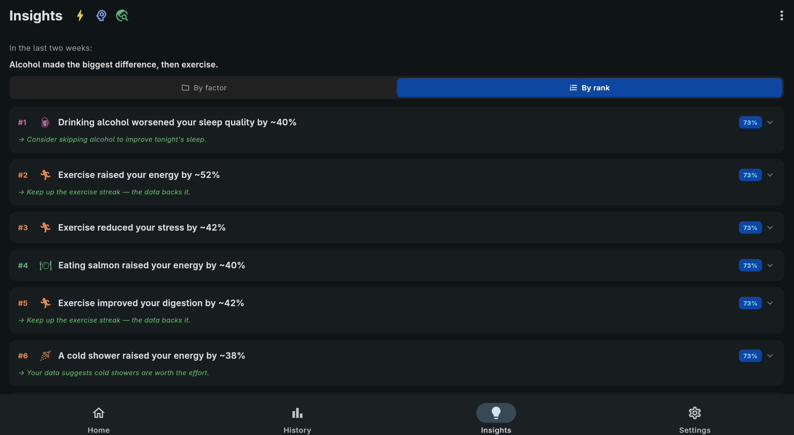
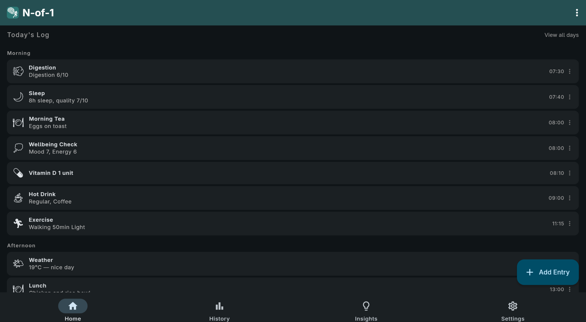
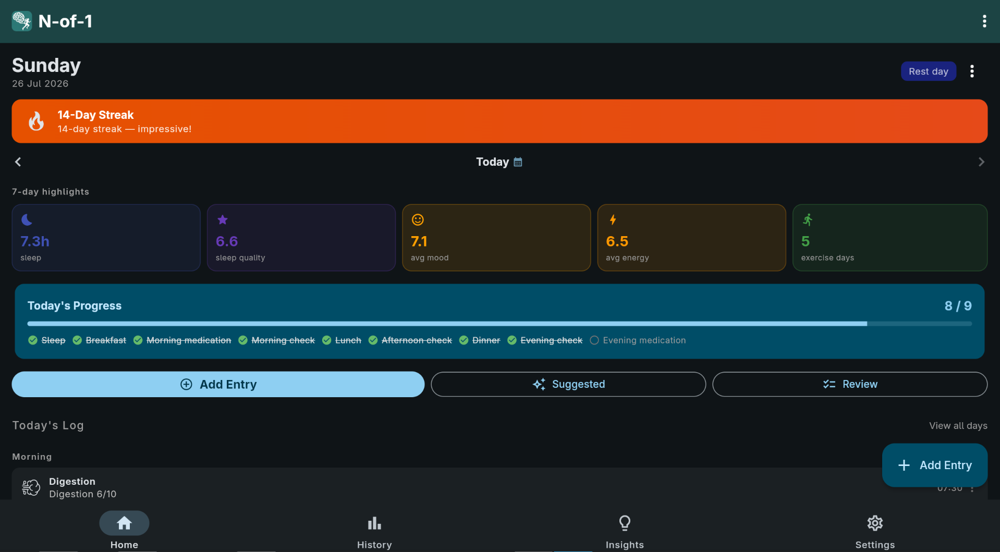

Your body is a machine, with a life full of signals.
Your car knows itself.
It reads a thousand signals a second and tunes itself, every second you drive.
Cars have done this since the 1980s.
You just need data.
Your car tunes for performance. What does performance mean to you? It might be the time you clocked on your morning run. For someone else it's how much work they got done before 11am, or attacking the job they'd been putting off, because that day they felt up to it. Same question underneath: what made that day different?

n.
Why it exists
Commercial wellness apps want your data and a subscription, and hand back some unexplained “score” number. This app is for people who want control and transparency:
- Optimise how you feel day to day — more energy, steadier mood, better motivation
- Hunt patterns behind symptoms — flares, digestive ups and downs, pain, brain fog, sleep crashes, and what preceded them
- Useful for anyone affected by autoimmune conditions or chronic symptoms — track what your body reacts to
- Keep sensitive health data off someone else's server, by design
You can also use it alongside clinical care: a structured, dated record of symptoms, energy, sleep and lifestyle context to bring into appointments. It does not replace professional advice; it helps you show up with patterns and timelines instead of vague recollections.
What you can log
- Sleep — bed/wake times, quality, night wake-ups, naps
- Exercise — sessions, duration, intensity, category
- Food — meals, snacks, caffeine, alcohol, late eating
- Medication & supplements — fully user-defined; no fixed drug list
- Mood & energy — energy, mood, productivity, stress across the day
- Symptoms — brain fog, upset stomach, whatever's bothering you, with severity
- Digestion — including IBS patterns
- Weather and work — conditions and work-life balance
- Notes, gratitude and photos — the context that numbers miss

Why it gets used
Capture things when they happen, while it's convenient. You don't need to cram before bed. That is why traditional health journals don't get used, and that convenience is what makes N-of-1 work.
- Guided daily review — asks the questions, so you don't have to
- History & insights — surface the relationships behind your sharpest days and your worst ones
- Reminders — accountability that keeps you logging consistently (optional)
- PIN / biometric lock — nobody opens the app but you (optional)
- You own the files — plain JSON on your device. Point it at a sync folder and it works across your devices.
Your data is not encrypted. Entries are stored as plain, readable JSON. The PIN and biometric lock guard the app, not the files. Anyone with access to your unlocked device, your file system, or your sync folder can read them, as can your sync provider. If that matters to you, use full-disk encryption, an encrypted sync tool, or an encrypted container for the data folder.

Getting it
N-of-1 is free software under the GPL, version 2. There is no store listing — you build it yourself from source with one command per platform, and the repository explains how.